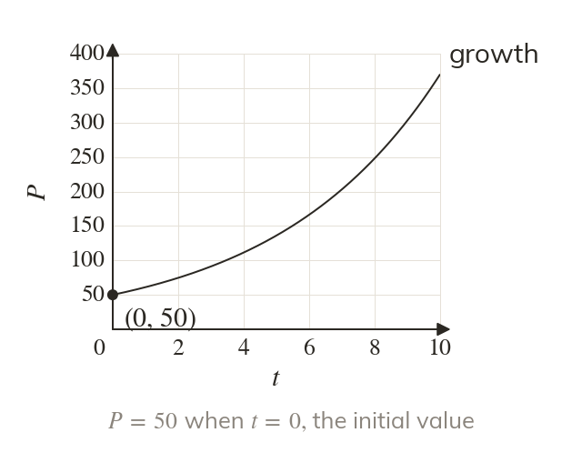
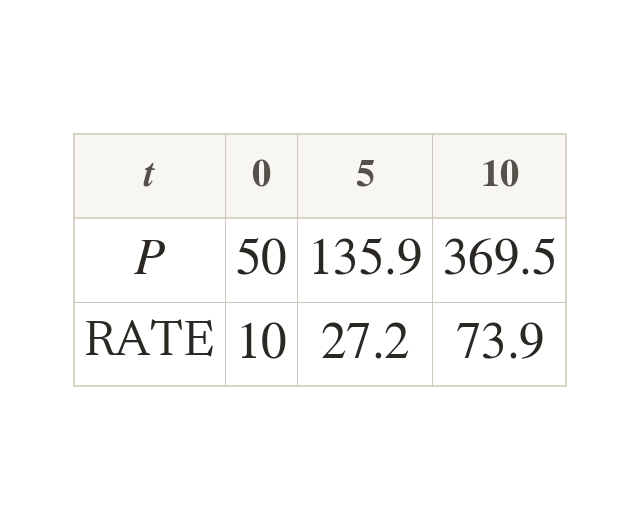
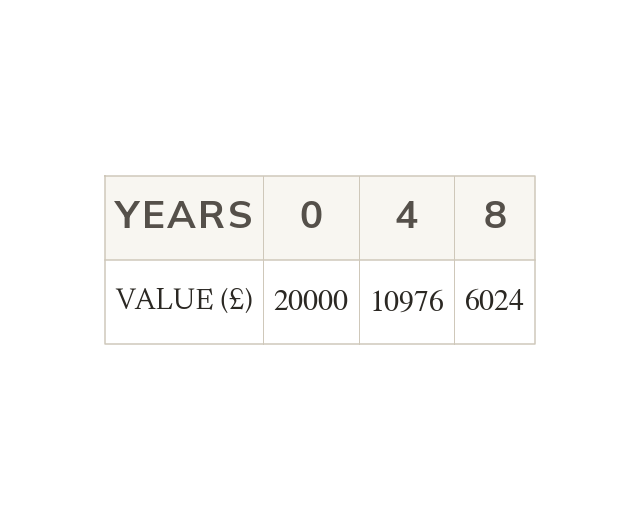
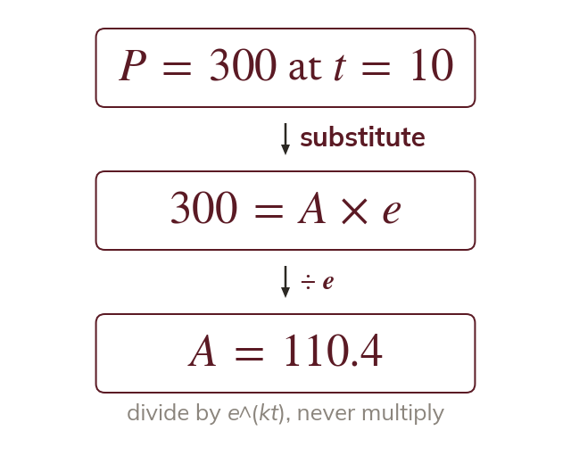
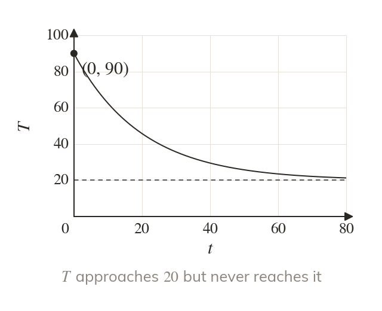
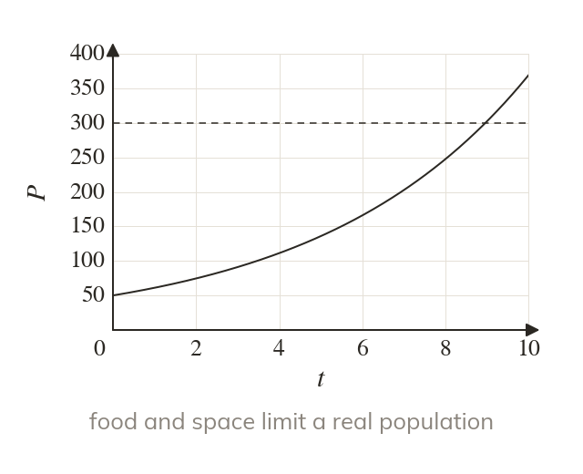

The initial value
In putting gives so is the initial value. means growth and means decay.
Exponential models describe quantities whose rate of change is proportional to their size, such as populations, savings, radioactive material and cooling drinks. Finding the time in a model needs logarithms, which start in and come back to models in
Work down the page at your own pace. Write every answer in your book first, then click to check it.
Read each card, then follow the worked examples one step at a time.

In putting gives so is the initial value. means growth and means decay.

The rate of change of = Aeᵏᵗ is kAeᵏᵗ, which is The bigger the population, the faster it grows.

In a context, A is the amount at the start and k says how fast it changes. A car modelled by is worth new and loses value ever more slowly.
Pick an answer. If it's wrong, the feedback tells you which mistake it was.
Write the blanks in your book first, then tap each one to check.
Read each card, then follow the worked examples one step at a time.

If and when then
Dividing by gives

In for a cooling drink, the term shrinks towards as t grows. So approaches the room temperature, and is how far above it the drink starts.

A growth model grows without limit, which no real population can do. A refinement caps it with a model that levels off, or limits the times the model is used for.
Pick an answer. If it's wrong, the feedback tells you which mistake it was.
Write the blanks in your book first, then tap each one to check.
Finished? Next lesson: 14.4 Logarithms as Powers.
For each skill, tap the one that is true for you today. Your Revise pages start with anything you mark Not yet.
Your ratings are saved on this device only.
Log in, then search for a code to practise that skill.